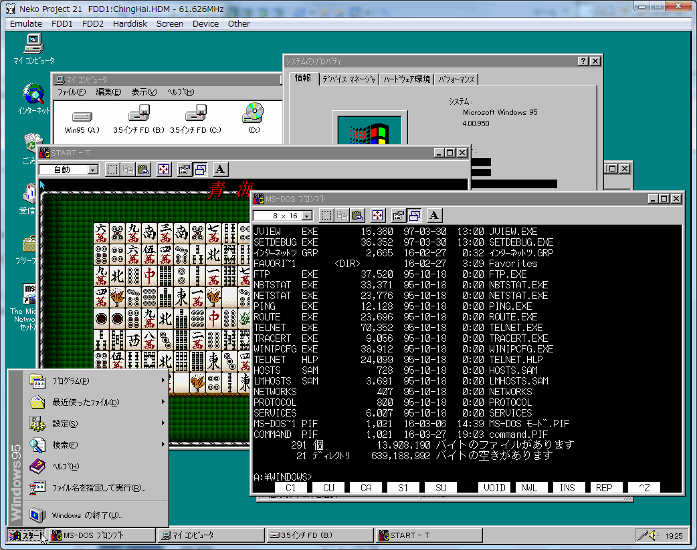

ねこープロジェクト21/Wはウィンドウアクセラレータをサポートしています。
PC/AT互換機とは異なり、PC-9800アーキテクチャでは98グラフィックとウィンドウアクセラレータは独立に動作するため、本エミュレータでも同様に独立した描画機構となっています。 デフォルトではエミュレーションウィンドウに統合された形で表示されますが、独立したウィンドウとして動作させることも出来ます。
設定の詳細についてはWindow Accelerator optionをご覧ください。